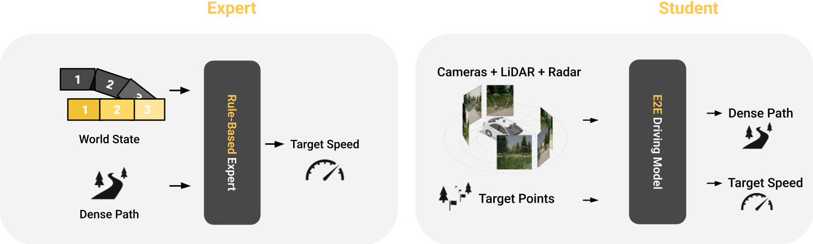
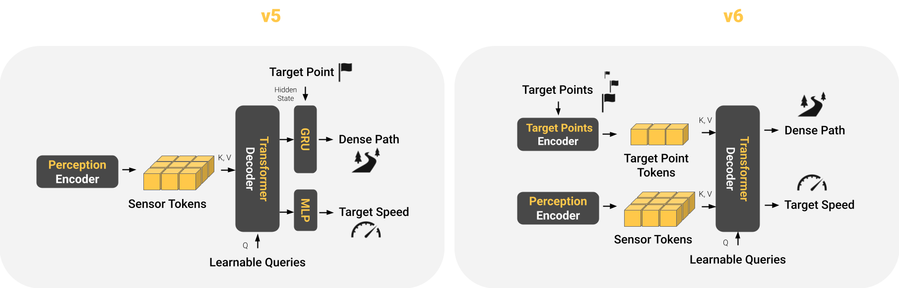

Research · June 26, 2026
No More Shortcuts: Closed-Loop Driving Without Target Point Bias
TÜBINGEN – June 26, 2026
For years, the target point bias was an open secret in the CARLA[1] end-to-end driving community: the best driving policies scored well in part by steering toward the next GPS waypoint rather than by understanding the traffic and road layout around them[2]. CARLA, the most established simulator for autonomous driving, has long served as the initial proving ground where new self-driving research ideas are validated before the industry takes them up. However, the target point, which is intended as a proxy for a coarse GPS-based navigation system in simulation, is in practice implemented as a precise location coordinate along the lane center. This practically noise-free signal, far cleaner and more expensive than what a level 5[3] driving stack could afford, is provided as an input to end-to-end driving policies, enabling shortcut learning[4]. Our CVPR 2026 paper LEAD helps to address this problem.
To understand where the shortcut comes from, we need to look at how these policies are trained. Virtually all top CARLA models learn by imitation, as Figure 1 shows: a privileged expert drives the vehicle and collects a dataset, after which the model is trained to mimic the expert's actions. The expert has access to the true world state and the path to follow, hence it must only solve the simpler problem of choosing an appropriate speed. The student must then solve a harder problem: it learns to predict both the path and the speed from actual sensor data, i.e. camera, LiDAR and radar. However, the student also has access to the accurate target locations, usually spaced several tens of meters apart along the desired path.

CARLA has long been known for routes that stretch for kilometers, the kind of long-horizon closed-loop benchmarking that much more closely resembles the real world than experiments on static datasets as evidenced by prior research[5][6]. While GPS target points make kilometer-long routes tractable, they also open the door to the target point bias. For steering, the target point provides almost all the information a driving policy needs: since all points lie near the (known) true path, a policy can produce reasonable motion planning simply by driving directly towards the next point. Figure 2 makes the bias tangible: drag the target point off the road, and a policy that relies on it heavily will follow the point, while a policy trained to depend on it less results in a sensible path.
Undoing Shortcut Learning
How can we close the gap between the privileged expert and the student that imitates it? One of the main gaps lies in navigation, where the expert follows a dense route while the student steers based on a single target point as input: Our prior work TransFuser v5[7] (Figure 3, left) feeds the single target point as input to a Gated Recurrent Unit (GRU) that predicts the dense path. This simplifies shortcut learning as only few layers separate the input from the output and hence leads to strong target point reliance (Figure 2, left). TransFuser v6, our new student architecture proposed in LEAD (Figure 3, right), treats the target points as ordinary tokens read by the transformer decoder alongside the sensor tokens. This allows the TransFuser v6 model to consider multiple target points at once. Moreover, the induced architectural inductive bias weighs these navigation cues against the visual evidence. This reduces reliance on the target point (Figure 2, right).

Closing the navigation gap through both the architecture above as well as higher-quality training data weakens the target point bias significantly and contributes to safer driving. In particular, our experiments demonstrate that the weaker target point bias makes TransFuser v6 steadier when the GPS is unreliable, as is often the case in the real world, as shown in Video 1. Within the same driving conditions, TransFuser v5's motion is more sensitive to localization noise in the target point and demonstrates weaker perception of surrounding traffic than TransFuser v6.
However, we also discovered an interesting limitation: On the driving benchmark Longest6 v2[8] with up to 3 km long routes, every individual infraction type improves except route deviations (Figure 4) which occur when the vehicle leaves the road and enters the non-drivable area (e.g. sidewalk).
Note that driving off-route is a classical sign of a driving policy operating outside its training distribution, a long-standing weakness of imitation learning[9]. As the expert driver does not collect such data, the student policy never learns to recover once it deviates far from the intended route. This reveals an interesting insight: The unreasonable effectiveness of existing self-driving policies learned with imitation learning in the CARLA simulator has largely been caused by the target point bias and the resulting opportunity for the model to exploit shortcuts. While in-distribution (i.e. in CARLA) such policies can achieve high scores. However, they are brittle and fail to generalize to out-of-distribution scenarios with ambiguities or less accurate conditioning signals.
Testing the generalization boundaries
Video 2 demonstrates a failure case caused by the absence of the learned shortcut: the policy misreads the scene and drifts off the lane, with the target point no longer providing a strong enough force to pull it back towards the route.
These failures took little to provoke, only a traffic situation slightly outside the training distribution. If shifts this small produce failures, how does the policy hold up under distribution shift more broadly?
Fail2Drive [10] answers this. Each of its 100 scenarios pairs an in-distribution route with an out-of-distribution variant where a single element changes: a traffic sign, an agent’s behavior, or an obstacle’s position. Any gap between the two halves of the benchmark is attributable to that one shift. Despite the limitations outlined above, our policy ranks first at time of publication, scoring 91% on in-distribution and 75% on out-of-distribution scenarios. To understand these failures better, Video 3 illustrates the model’s auxiliary outputs: a bird’s-eye-view segmentation as well as 3D bounding boxes, which provide a better understanding of the model's internal representation.
Most failures can be split into two different kinds: Either perception breaks down, e.g. the model fails to recognize a crossing elephant as an obstacle. Or planning fails, e.g. the model does not correctly steer around a parked car whose orientation is slightly outside the training distribution. The auxiliary outputs also reveal a rare third kind of failure case: the model's perception fails, yet it still completes the route, because the obstacle resembles a training example closely enough to trigger the right trajectory by accident. The perception error never surfaces in the score. This means that successful driving does not necessarily mean the policy understood what it saw. Hence the 16% gap above understates the true problem: many of the runs counted as successes may have passed for the wrong reasons.
Moving forward
Are CARLA benchmarks no longer useful now that the leaderboards are nearly saturated? Not quite. Rather, we believe that they have only begun to surface genuinely interesting failures stemming from distribution shift, in both perception and planning. Solving these problems requires advances along multiple dimensions, in particular:
1. Encoder robustness. Several failures trace back to the encoder, which turns raw sensor input into the model's representation of the scene. While internet-data trained foundation models are popular for robust camera encoding today, they have not provided significant benefits related to benchmarks like CARLA so far. Another promising lever is the auxiliary task the encoder learns alongside driving. Semantic labels (car, lane marking) only include categories present already in the training set, hence transferring poorly to new ones. A more suitable auxiliary task might include generic occupancy prediction which is agnostic to the semantic category of the object. Moreover, we could teach the encoder to more explicitly rely on geometric information from LiDAR and radar in such situations which are often ignored for rare events.
2. Decoder robustness. The planning decoder learns to drive by imitating logged trajectories, hence it memorizes the routes it trained on and generalizes badly outside the training distribution. The most direct remedy is closed-loop training, where the policy learns from the consequences of its own actions as it drives, rather than imitating fixed driving logs.
Conclusion
LEAD tackles the target point shortcut. However, once a policy no longer relies on following target points, its real weaknesses are revealed: a limited ability to recover from off-route drift, and fragile perception under distribution shift. These weaknesses were there all along; the target point bias only hid them on most benchmarks.
Our blog post focused on one contribution of the LEAD paper: addressing intent asymmetry between the student and teacher. Readers interested in learning more can refer to the paper for discussions on visibility and uncertainty asymmetries which are also contributing to TransFuser v6's state-of-the-art performance. Beyond CARLA, the paper conducts experiments on real datasets. TransFuser v6 has since become a standard baseline architecture in neural simulators such as AlpaSim[11].
Distribution shift is, we believe, the central unsolved problem for both closed-loop driving in simulation and the real world. We believe that solving this problem requires a concerted effort from the community, which is why every piece of this work is open, and we hope other researchers will build on it. Our paper, code, datasets, and trained models are available at github.com/kesai-labs/lead.
Citation
@inproceedings{Nguyen2026CVPR,
author = {Long Nguyen and Micha Fauth and Bernhard Jaeger and Daniel Dauner and Maximilian Igl and Andreas Geiger and Kashyap Chitta},
title = {LEAD: Minimizing Learner-Expert Asymmetry in End-to-End Driving},
booktitle = {Conference on Computer Vision and Pattern Recognition (CVPR)},
year = {2026},
}
References
- A. Dosovitskiy, G. Ros, F. Codevilla, A. Lopez, V. Koltun. “CARLA: An Open Urban Driving Simulator.” CoRL, arXiv:1711.03938, 2017.
- B. Jaeger, K. Chitta, A. Geiger. “Hidden Biases of End-to-End Driving Models.” ICCV, arXiv:2306.07957, 2023.
- SAE International. “Taxonomy and Definitions for Terms Related to Driving Automation Systems for On-Road Motor Vehicles.” SAE Recommended Practice J3016, J3016_202104, 2021.
- R. Geirhos, J.-H. Jacobsen, C. Michaelis, R. Zemel, W. Brendel, M. Bethge, F. A. Wichmann. “Shortcut Learning in Deep Neural Networks.” Nature Machine Intelligence, arXiv:2004.07780, 2020.
- Z. Li, Z. Yu, S. Lan, J. Li, J. Kautz, T. Lu, J. M. Alvarez. “Is Ego Status All You Need for Open-Loop End-to-End Autonomous Driving?” CVPR, arXiv:2312.03031, 2024.
- F. Codevilla, A. M. López, V. Koltun, A. Dosovitskiy. “On Offline Evaluation of Vision-based Driving Models.” ECCV, arXiv:1809.04843, 2018.
- J. Zimmerlin, J. Beißwenger, B. Jaeger, A. Geiger, K. Chitta. “Hidden Biases of End-to-End Driving Datasets.” CVPR Workshop on Foundation Models for Autonomous Systems, arXiv:2412.09602, 2024.
- B. Jaeger, D. Dauner, J. Beißwenger, S. Gerstenecker, K. Chitta, A. Geiger. “CaRL: Learning Scalable Planning Policies with Simple Rewards.” CoRL, arXiv:2504.17838, 2025.
- S. Ross, G. J. Gordon, J. A. Bagnell. “A Reduction of Imitation Learning and Structured Prediction to No-Regret Online Learning.” AISTATS, arXiv:1011.0686, 2011.
- S. Gerstenecker, A. Geiger, K. Renz. “Fail2Drive: Benchmarking Closed-Loop Driving Generalization.” arXiv:2604.08535, 2026.
- NVIDIA. “AlpaSim: A Modular, Lightweight, and Data-Driven Research Simulator for Autonomous Driving.” github.com/NVlabs/alpasim, 2025.